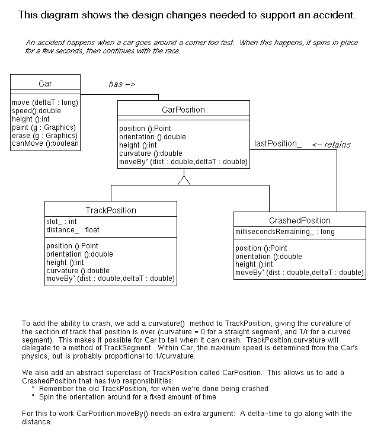

After doing a bit of implementation, I asked the class to extend the Slot Car Program. I asked them to implement the "car crashes" use case. This happens when a car goes around a corner too fast. When this happens, it should spin in place for a few seconds, then continue with the race.
Here's the answer I was looking for:
